Battery Energy Storage Systems (BESS) are increasingly central to modern power infrastructure—supporting renewable integration, grid stability, and new ancillary service revenue streams. Yet measuring performance goes far beyond tracking a single "availability" number. A world-class BESS plant tracks KPIs across five interlinked domains: energy and capacity, efficiency and performance, availability and reliability, degradation and ageing, safety, and financial returns. Each domain answers a different operational question, and gaps in any one of them can silently erode project economics and grid compliance. This guide provides a structured, engineering-grade walkthrough of every major performance indicator, its calculation methodology, industry benchmarks, and why it matters to operators, EPCs, and asset owners alike.
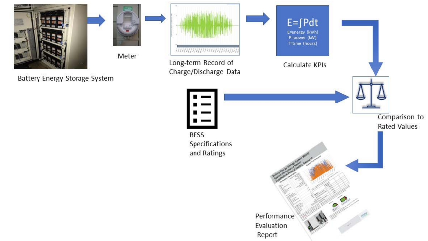
1. Energy & Capacity KPIs
The foundation of BESS performance monitoring begins with understanding exactly how much energy the system can store and deliver. These metrics directly drive revenue capability and contractual compliance.
Rated vs. Usable Capacity
Rated (Nominal) Capacity is the nameplate energy the system is designed to hold, expressed in kWh or MWh. Usable Capacity is always lower—it is the energy available after accounting for depth-of-discharge (DoD) limits and round-trip losses. Specifying "usable capacity" in RFPs rather than nominal capacity is critical to avoid scope ambiguity during procurement.
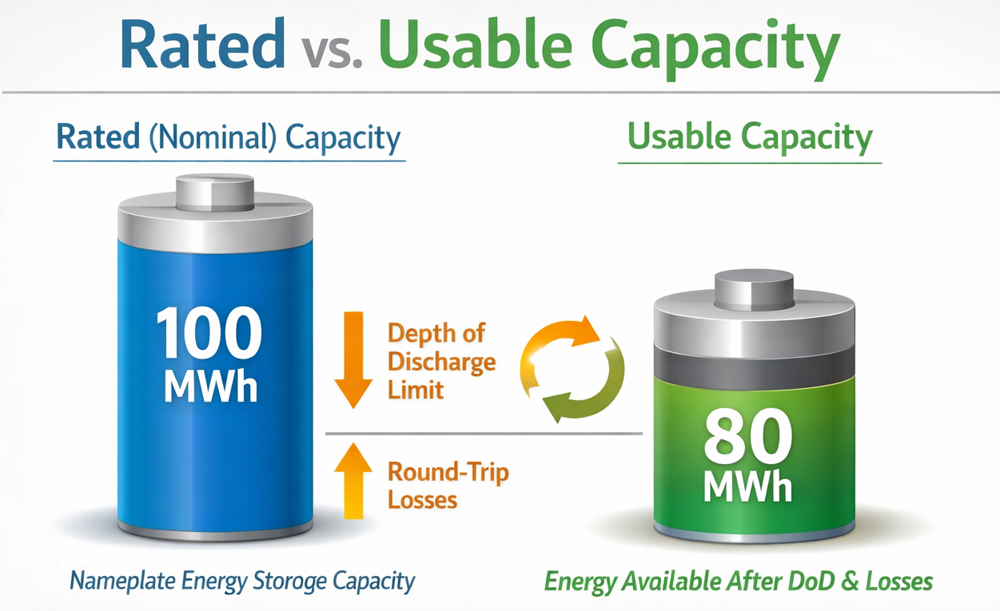
Demonstrated Capacity & Capacity Ratio
Defined by the U.S. DOE Federal Energy Management Program (FEMP) and NREL, Demonstrated Capacity is the maximum energy accumulated in the battery over a defined analysis period from actual metered charge and discharge data. It is then normalized against rated capacity to produce the Capacity Ratio:
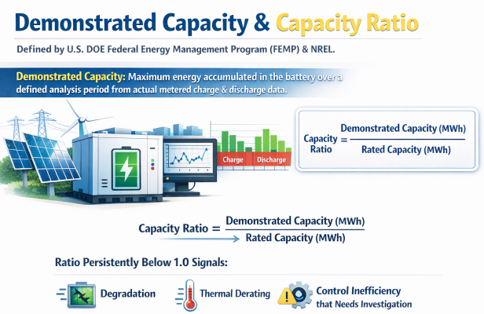
A ratio persistently below 1.0 signals degradation, thermal derating, or control system inefficiency that needs investigation.
State of Charge (SoC)
SoC is the real-time charge level expressed as a percentage of usable capacity. It is the primary dispatch input for the Energy Management System (EMS)—every charge, discharge, and standby command is conditioned on SoC. SoC accuracy is critical: errors in SoC estimation cascade into incorrect available energy figures and can trigger safety limits unnecessarily or fail to prevent deep discharge damage.
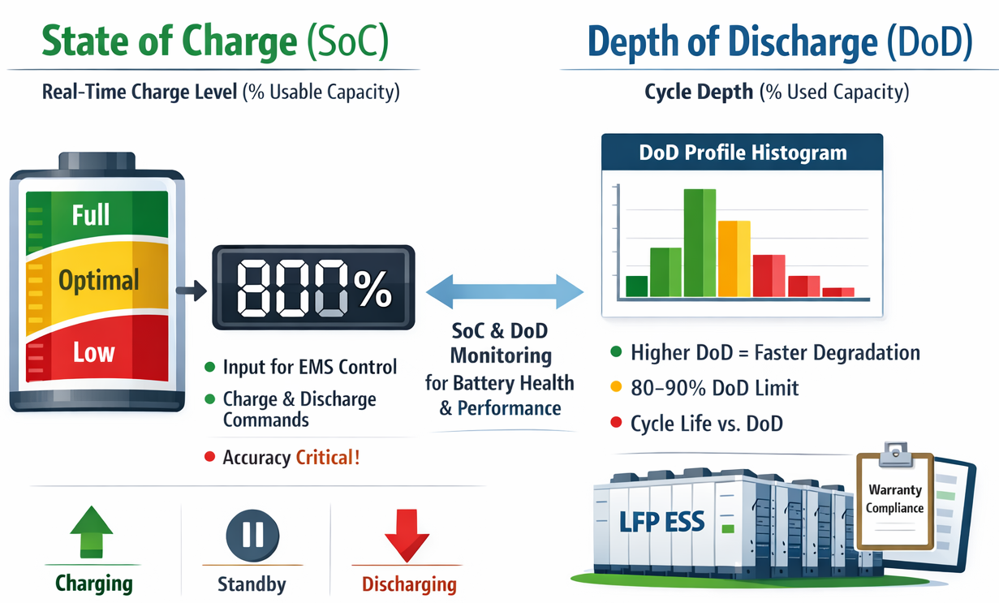
Depth of Discharge (DoD)
DoD is the fraction of total capacity drawn in a single cycle. There is an inverse and non-linear relationship between DoD and cycle life: batteries cycled at 80% DoD degrade significantly faster than those cycled at 50% DoD. Most lithium iron phosphate (LFP) BESS designs set operational DoD limits of 80–90% to extend calendar life. Tracking the DoD profile histogram over time is a warranty compliance requirement in most Long-Term Service Agreements (LTSAs).
C-Rate
C-rate quantifies the speed of charging or discharging relative to total capacity. A 1C rate fully charges or discharges a battery in one hour; 0.5C takes two hours. Higher C-rates increase internal resistance and heat generation, accelerating degradation and reducing RTE. For Indian BESS projects operating under CERC tariff schedules, C-rate directly determines the power-to-energy ratio that defines whether a project qualifies as a power-oriented (frequency regulation) or energy-oriented (peak-shaving) asset.
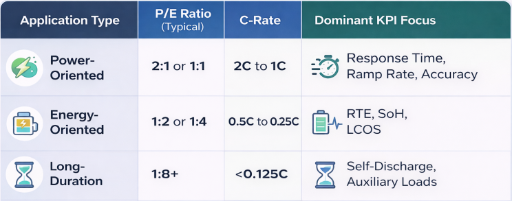
2. Efficiency & Performance KPIs
Round-Trip Efficiency (RTE)
RTE is the single most cited BESS performance metric and directly determines the economics of every kilowatt-hour stored and discharged:
RTE (%) = Energy Out (MWh)Energy In (MWh)×100RTE (%) = Energy In (MWh)/Energy Out (MWh)×100
RTE aggregates electrochemical losses in the battery cells, conversion losses in the Power Conversion System (PCS), transformer losses, and auxiliary loads such as HVAC and fire suppression. Modern lithium-ion BESS typically achieve 88–94% AC round-trip efficiency under nameplate conditions, though real-world values dip at high-temperature or high-C-rate operation.
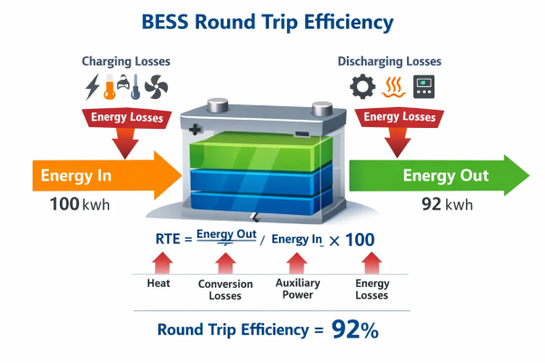
In India, the CERC has established a normative RTE of 85% for integrated BESS in grid tariff calculations, while the Viability Gap Funding (VGF) scheme references an 80% RTE benchmark in project orders. Even a 2% RTE swing meaningfully alters the Levelized Cost of Storage (LCOS), making accurate RTE monitoring essential for financial model integrity.

Energy Throughput
Annual energy throughput (MWh/year) measures the total energy the system has discharged across a period. It tracks actual utilization against design assumptions and is the denominator for warranty degradation limits. Throughput data, combined with DoD profiles, feeds directly into battery degradation models.
Equivalent Full Cycles (EFC)
Because real-world dispatch involves frequent partial cycles of varying depth, EFC normalizes all charge and discharge activity into a single lifecycle metric:
EFC=Total DC Discharge Throughput (MWh)/Usable DC Energy per Cycle (MWh)
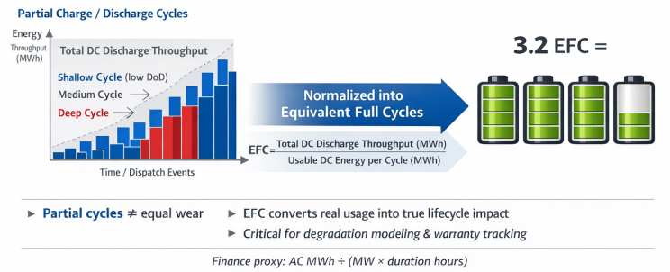
EFC is the correct input for degradation models and warranty accounting—simply counting charge/discharge events without normalizing for DoD underestimates wear from deep cycles and overestimates wear from shallow cycles. For finance modeling, a simpler proxy uses total AC MWh sold divided by (MWac × contracted duration hours).
Response Time
Lithium-ion BESS can ramp from standby to full power in milliseconds, outpacing all mechanical storage technologies. However, at plant scale, effective response time is governed by EMS/SCADA communication latency, parallel-unit coordination, and protection relay settings rather than cell chemistry alone. For frequency regulation services—where sub-second Fast Frequency Response (FFR) is increasingly required—the plant-level response time is a contractual KPI that determines market eligibility and revenue.
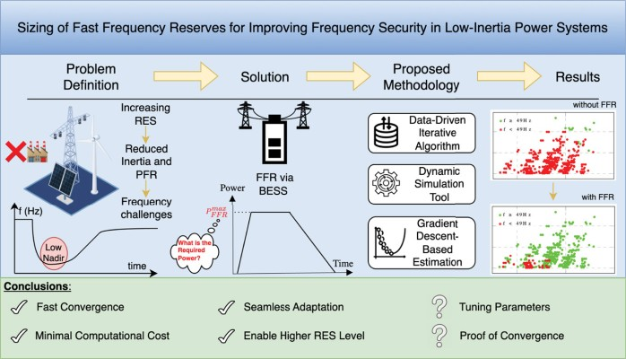
3. Availability & Reliability KPIs
Most BESS plants track a single "availability" percentage, but this obscures four distinct dimensions that each have different blind spots.
The Four Availability Types
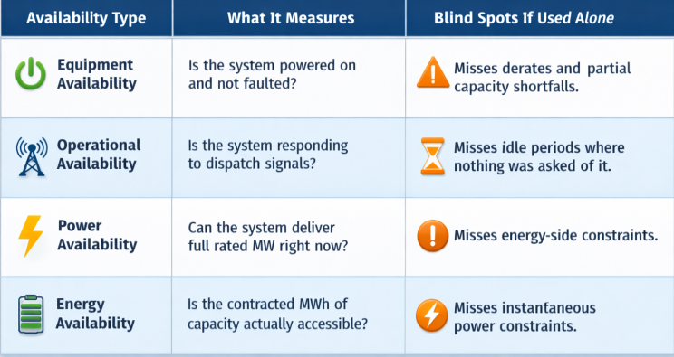
Overall Battery Effectiveness (OBE)
OBE combines all four availability dimensions into a single composite metric—analogous to OEE (Overall Equipment Effectiveness) in manufacturing—to give a holistic picture of whether the asset is available, responsive, and energetically capable simultaneously. This is emerging as a best-practice KPI for operators managing large BESS portfolios across multiple sites.
System Availability Target
Industry benchmarks and CERC's normative parameters for grid-connected BESS in India set the target System Availability at ≥98% annually, calculated as:
Availability (%) = Total Operational Hours−Downtime Hours/Total Operational Hours×100Availability (%)
At 98% availability, allowable annual downtime is approximately 175 hours. CERC's Normative Availability Factor (NAPAFess) is set at 90% for tariff purposes under the IEGC 2023, creating a regulatory floor for asset performance in India.
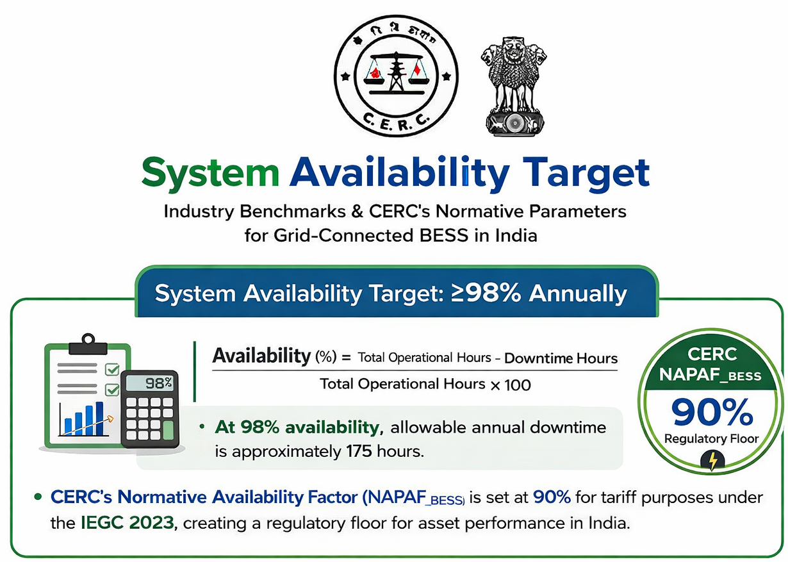
4. Degradation & Ageing KPIs
Battery degradation is the most consequential long-term performance variable in BESS projects and must be tracked continuously to protect revenue, warranties, and safety.
State of Health (SoH)
SoH is the ratio of the battery's actual storage capacity to its original nameplate capacity:
SoH (%) = Current Usable Capacity/Original Nameplate Capacity×100
SoH directly controls usable energy available for dispatch and is the primary input to augmentation planning. While electric vehicle batteries are typically retired at 80% SoH, stationary BESS assets often continue operating down to 60–70% SoH since there is no range anxiety equivalent in grid storage.
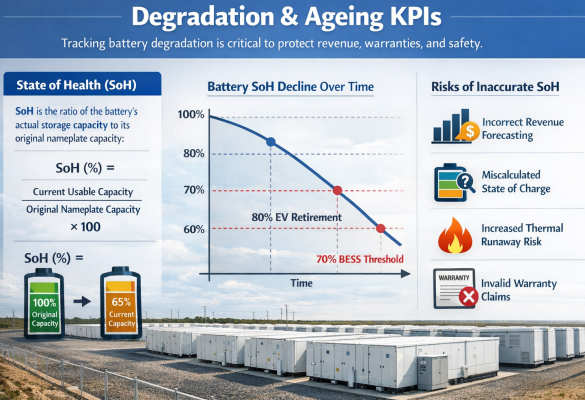
Inaccurate SoH measurement has measurable downstream risks: miscalculated SoC, incorrect revenue forecasting, understated thermal runaway risk as cells approach end-of-life, and invalidation of warranty claims.
Calendar Ageing vs. Cycle Ageing
Degradation has two independent additive mechanisms:
- Calendar Ageing — Capacity loss that occurs simply due to elapsed time, driven by high resting SoC, elevated temperature, and electrolyte decomposition. A linear annual degradation rate model applies.
- Cycle Ageing — Capacity loss proportional to EFC accumulated, accelerated by deep DoD and high C-rates.
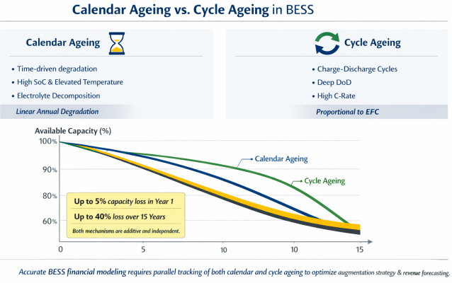
BESS plants can lose up to 5% of available energy capacity in the first year and up to 40% over 15 years through combined ageing mechanisms. Both mechanisms must be modeled in parallel when building financial projections and augmentation schedules.
Capacity Retention & Augmentation Triggers
Capacity retention tracks the percentage of original capacity remaining at any point in time. When retention falls below contracted thresholds—typically 80% of original capacity—an augmentation event is triggered, involving replacement or addition of battery modules to restore performance. Projects with well-defined augmentation KPIs and trigger levels protect revenue continuity across the full 15–20-year project life.
5. Safety KPIs
Safety monitoring is not an afterthought—it is an operational necessity. The BMS is the first line of defense for cell-level safety, continuously monitoring the following KPIs:
Critical Safety Metrics
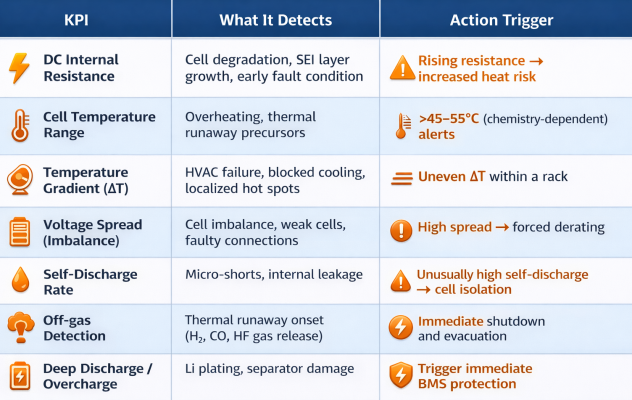
Thermal Management Performance
In high-ambient-temperature environments such as India, thermal management is a critical performance enabler. Every 10°C rise in cell operating temperature accelerates degradation. HVAC system KPIs—including Coefficient of Performance (COP), rack inlet temperature, and delta-T across the module—should be tracked as operational performance indicators alongside battery metrics.
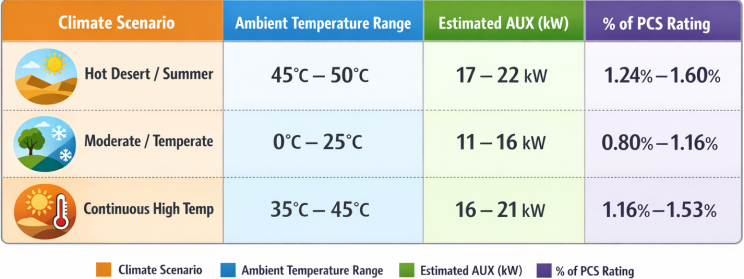
6. Grid Services Performance KPIs
Grid services are the primary revenue source for utility-scale BESS, and each service has its own performance measurement criteria.
Frequency Regulation KPIs
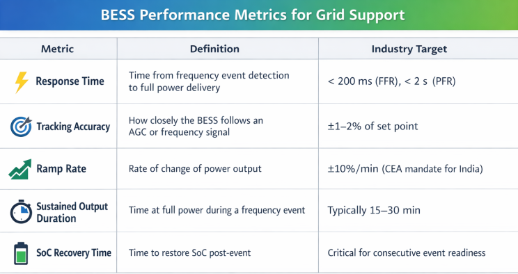
Response time and tracking accuracy are particularly important economically: in pay-for-performance frameworks, higher accuracy increases market clearing success and revenue per MW. Grid operators require documented logs of response time, ramp accuracy, sustained output, and recovery behavior for market settlement and compliance verification.
Reactive Power & Voltage Support
Modern PCS units provide reactive power control (Q control) for voltage support at the Point of Interconnection (POI). KPIs include reactive power delivery accuracy, voltage regulation range (±5% of nominal), and power factor compliance under various loading conditions.
India-Specific Grid Compliance KPIs
Under the CEA Technical Standards for Connectivity Amendment 2023 (enforceable from March 2025), BESS projects connecting to the Indian grid must demonstrate compliance in simulation-based studies and field testing:
- Normative Availability Factor (NAPAFess): ≥90% per IEGC 2023
- Normative RTE (RTEess): 85% for tariff calculations
- Ramp Rate: ±10%/min per CEA mandate
- Fault Ride-Through (FRT) Capability: Must withstand specified voltage dips without tripping
- SCADA/Real-time Telemetry: Mandatory data availability to State Load Despatch Centre (SLDC) before grid integration
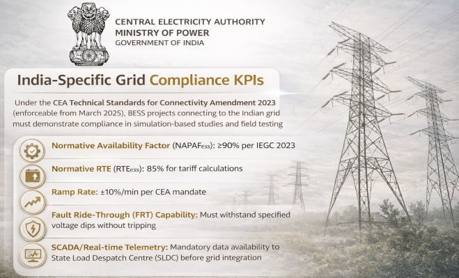
7. Financial & Commercial KPIs
Operational performance metrics must ultimately translate into financial outcomes. The following KPIs bridge the gap between technical operation and commercial value.
Levelized Cost of Storage (LCOS)
LCOS is widely regarded as the most comprehensive financial benchmark for BESS—it expresses the all-in cost per MWh of energy discharged over the system's lifetime, incorporating CapEx, OpEx, degradation, augmentation, and financing costs. It enables technology comparisons across chemistries and project types on equal footing. As of 2026, BloombergNEF reports that the LCOS for a 4-hour system has fallen below $100/MWh in six major markets, highlighting the rapid cost trajectory.
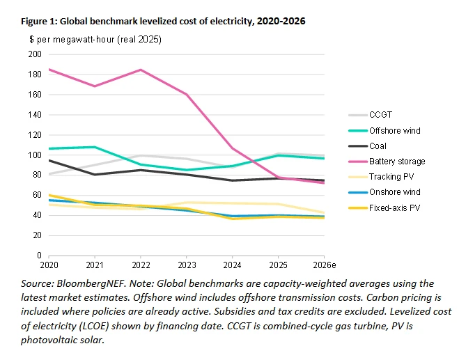
Revenue per MWh
Revenue per MWh delivered measures the commercial yield of the asset's energy output. It varies by application—frequency regulation typically commands a premium over energy arbitrage—and fluctuates with market conditions. Operators stacking multiple revenue streams (ancillary services + energy arbitrage + capacity markets) optimize this KPI through advanced dispatch algorithms.
Key Financial Performance Metrics
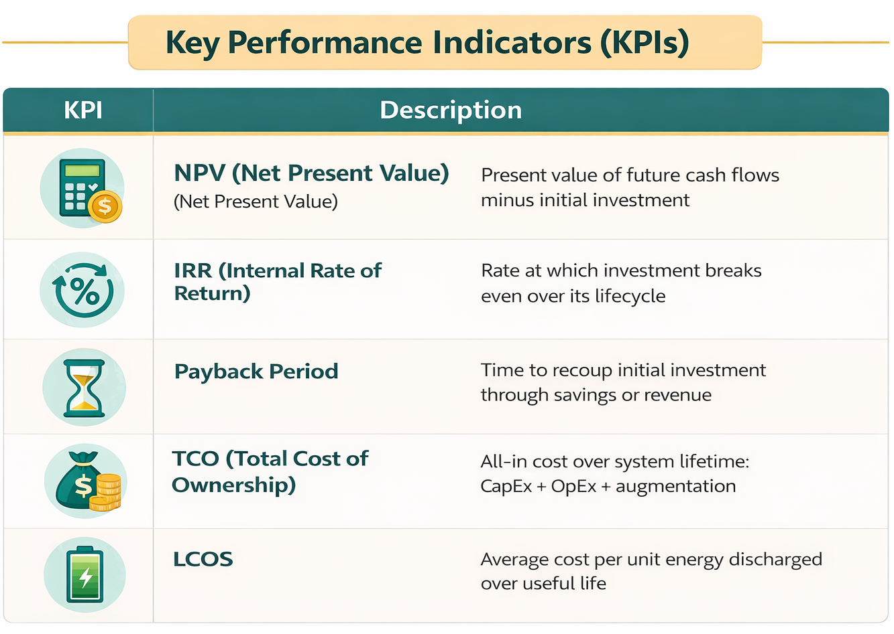
8. Integrated KPI Dashboard: Reference Framework
A mature BESS operations framework tracks KPIs across all five domains in a unified dashboard. The table below provides a reference-level summary with typical benchmarks.
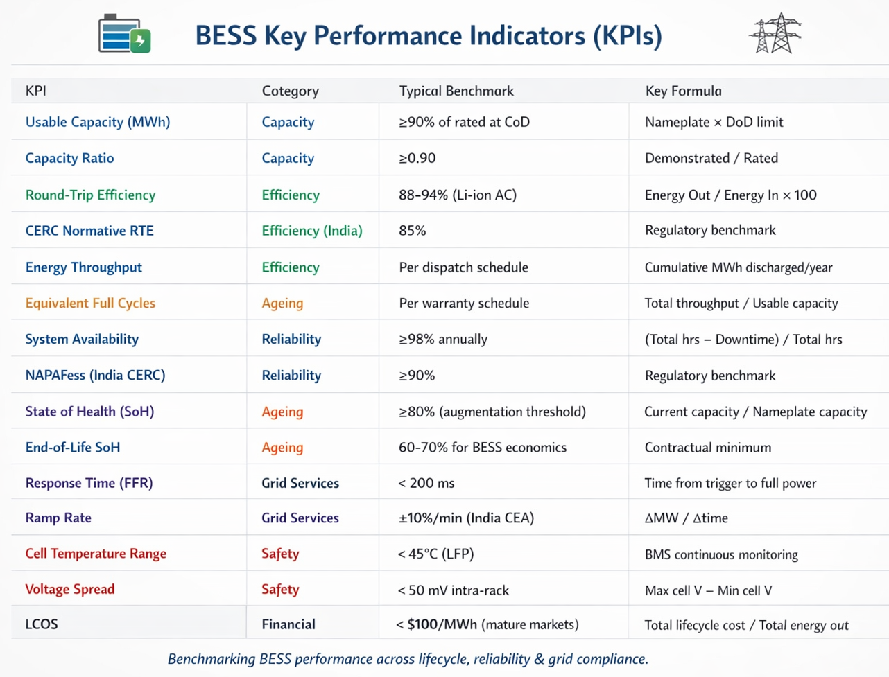
Conclusion
High-performance BESS operation demands that teams move beyond a single headline metric and instead manage a structured portfolio of KPIs spanning capacity, efficiency, availability, degradation, safety, grid compliance, and financial performance. Each KPI domain informs a different decision: SoH drives augmentation scheduling; RTE shapes dispatch strategy and tariff calculations; availability metrics trigger O&M escalations; safety KPIs enable early thermal event intervention; and LCOS frames investment and re-contracting decisions.
For BESS projects in India, the regulatory overlay adds further specificity: CERC's normative 85% RTE and 90% NAPAFess, CEA's ±10%/min ramp rate mandate, and the CEA Technical Standards Amendment 2023 compliance requirements collectively define a performance floor that operators must meet to protect grid connection approvals and tariff revenues. Integrating regulatory benchmarks into a unified operational dashboard is not just best practice—it is increasingly a condition for continued grid access.